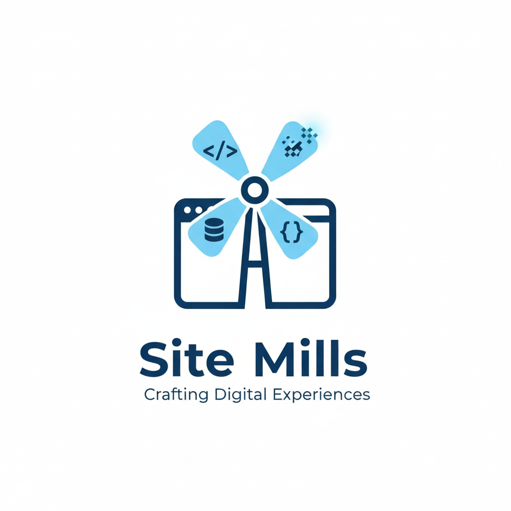

Our Brand, Our Process
The Site Mills logo is more than just an image—it's a symbol of our entire development philosophy. The windmill represents the process of "milling" or building something valuable from raw materials. Each of the four blades represents a core pillar of modern web development, working in harmony to create a complete and powerful digital experience.
- </> Markup: This commonly represents code or development, often signifying HTML or general programming, which is core to web development.
- { } Logic: This represents JSON (JavaScript Object Notation), a lightweight data-interchange format often used in web development for APIs and data structures. It signifies modern web technologies and how data is handled.
- Data: This symbol typically represents a database or data storage. In web development, websites often interact with databases to store and retrieve information, so it signifies the back-end infrastructure.
- Deployment: This symbol is meant to evoke digital information, data, or the internet itself. It can also hint at the "grinding" or processing of digital elements, much like a mill.